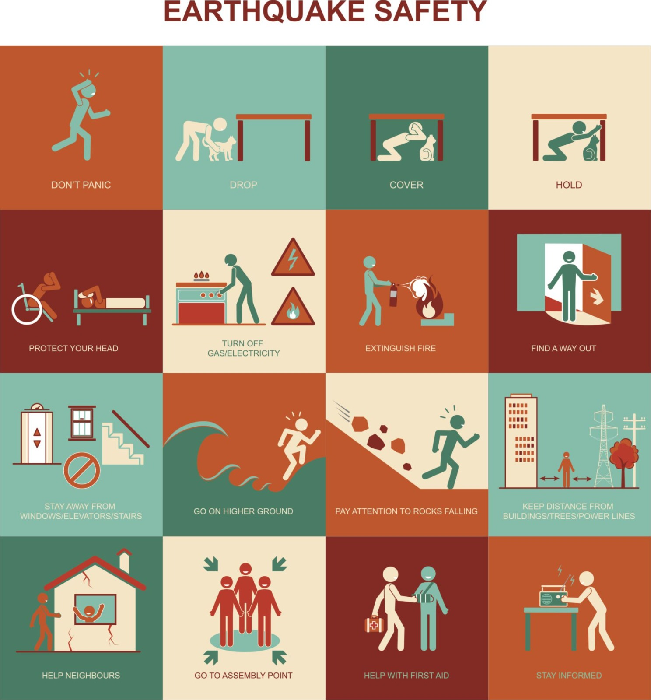

Here are some precautions you can take during an earthquake:

When You Are Indoors:
1. Immediately drop to the ground.
2. Reach a safe place such as under a table.
3. If you don't find any table near you, crouch at a corner of the building and cover your face and head with your arms.
4. Stay under any sturdy furniture, corner or inner door of your building.
5. Move away from any glass furniture/windows which could fall on you.
6. Shield your head with a pillow to avoid injuries against falling debris and glass.
When You Are Outside
1. If you are outside, remain at the place where you are till the tremor stops.
2. Move aside from trees, buildings or electrical connections.
3. Stay away from any loose utility wires or fuel/gas lines.
4. If you are travelling in a car during an earthquake, stop immediately and remain in your vehicle. Proceed only when the earthquake stops.
If You Are Trapped Under Debris
1. If you are trapped under debris, make sure not to light a match to avoid fire risks.
2. Stay calm and do not move.
3. Tap on a metal or whistle if available to help rescuers locate you.
4. Shout only as a last resort. If you shout, you may inhale a large amount of dust which can be dangerous.
After the Earthquake:
1. Administer First Aid: Attend to individuals with minor injuries using first aid kits.
2. CPR and Rescue Breathing: If someone is not breathing, administer rescue breathing. If the person has no pulse, perform CPR.
3. Be Mindful of Hazards: Attend any hazards that might have been caused by the earthquake.
Remember, it's always important to stay calm during an earthquake and follow these precautions to ensure your safety